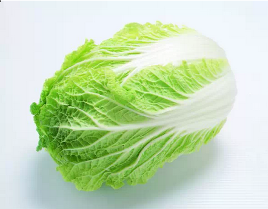

这是一个道家的奇效秘方 ， 不仅清肠 ， 排宿便 ， 甚至可以清除五脏的毒素 ! 每个人在家就可以做到 ， 而且没有风险副作用 。

无意间和萧道长聊起浙江有位医生秦兆虎指导病人用大白菜治高血糖和便秘等病 ， 萧道长有点惊讶 ：“ 这位秦先生是道门中人吗 ?”
“ 他和道门颇有渊源 。”
“ 难怪 !” 道长一捋胡子 ，“ 这白菜在咱们道家上清派被称为四秘之一 ， 非常不得了 !”
大白菜非常不得了 ? 这话听起来就像有人说 “ 筷子能当枪使 ， 一般人我不告诉他 ”。
“ 记得辟谷结束我给你吃什么吗 ?”
“ 哦 ， 大白菜 ”， 想起来了 ， 好一大盆 ， 带点姜丝辣椒 ， 道长说大白菜 “ 刮肠 ” 很厉害 。“ 有些肠胃病怎么也治不好的人 ， 只要认真吃一阵子大白菜 ， 一定有奇效 !”
“ 要想长生 ， 五脏当清 !” 道长说现在不是很多人期待辟谷排毒 、 治病 、 养生 、 补气吗 ? 不必千里迢迢满世界找大师指点 ， 每个人在家就可以做到 ， 而且没有风险副作用 ， 赶紧记下来吧 ：
大白菜 ， 以叶为主 ( 少量菜帮 ) 加水煮 ， 不加油盐 ， 可适量放少许辣椒 、 花椒或是去皮生姜 ( 生姜皮性寒 ， 姜肉性热 )。 每天肚子饿了就吃 ， 连吃三天 ， 不吃别的食物 ， 第三天除了吃白菜叶外可再喝些白菜汤 。 白菜要煮得烂一点 。
这种吃法排毒效果奇佳 ， 对便秘或者肠胃不健康的人是一次大扫除 。 如果每个月能坚持一次 ， 或者一次能增加到七天更佳 。 吃了以后会排出宿便 ， 刚开始黑色 ， 吃的时间长的会排出果冻一样的宿便 ， 坚持二十一天以上的人会排出五种颜色的大便 ， 那是把五脏的毒都清了 ......
“ 这样吃不会走不动路了吧 ?” 我这是替很多喜欢提问的网友问的啊 。
“ 呵呵 ， 保证你跑得比吃草的马还快 !” 道长哈哈大笑 。 不过他建议大家吃白菜的三天最好放在周末 ， 避开社会应酬社交活动 ， 静心在家读书打坐 。
“ 体内沉垢恶秽一旦排出 ， 妙不可言 !”
萧道长补充说明 ：“ 宿便一出 ， 清气会发生 ， 阳道易旺 ， 应禁房事数日 。 祝有缘众生人安身宁 ， 返璞归真 。”
据美国纽约一家专门从事癌症研究的权威机构透露 ， 中国和日本妇女乳腺癌的发病率比西方低得多 ， 这是为什么呢 ? 科学家在比较了世界各国的三餐食谱后得出结 论 ： 是由于中国和日本妇女多吃大白菜的缘故 。 调查资料表明 ， 每 10 万名妇女中 ， 每年乳腺癌的发病率为 ： 中国 9 人 ， 日本 21 人 ， 北欧 84 人 ， 美国 91 人 。
大白菜何来如此神功 ? 实验证明 ， 大白菜所含有的许多物质具有防癌抗癌的作用 ， 因此在美国国立癌症研究所发表的防癌食品排行榜中将白菜排在仅次于大蒜的后面 ， 名列第二 。
首先 ， 大白菜中含有丰富的维生素 A 和维生素 C， 其中维生素 C( 抗坏血酸 ) 的含量比黄瓜高 4 倍 、 比番茄高 1.4 倍 ; 维生素 A( 胡萝卜素 ) 的含量 ， 比黄瓜高 1.8 倍 。 维生素 A 是天然无毒的抗癌物质 ， 它能减少咽喉 、 食管和胃肠等上皮组织的炎症 ， 可以阻止致癌物质引起的细胞突变 ， 从而能抑制某些组织的癌前病变 ; 维生素 C 也叫抗坏血酸 ， 能够阻止致癌物质亚硝胺的生成 ， 同时能抑制癌细胞的增殖 。
其次 ， 大白菜含有一种叫做吲哚 -3- 甲醇的化合物 ， 其含量约占大白菜重量的 0.01%， 它能促进人体产生一种重要的酶 ， 这种酶能够有效抑制癌细胞的生长和分裂 。
另外大白菜所含有的微量元素钼 ， 钼 —— 是人体金属酶的重要组成部分 ， 据调查在食道癌的高发地区 ， 人们头发当中钼的含量最低 ， 这与当地水土中缺钼是有关的 。
能够防止致癌物亚硝铵合成的微量元素钼大量存在于大白菜中 ， 能阻断亚硝胺等致癌物质在人体内的生成 ， 所以能防止癌症的发生 。 据测算 ， 每天吃 1 磅大白菜 ， 或 白菜榨汁 ， 每天饭后服 200-300 克 ， 就能吸收到 500 毫克这种化合物 ， 达到预防癌症的目的 。
同时大白菜中还含有微量元素硒 —— 是心脏代谢不可获缺的微量元素 ， 被誉为 “ 生命火种 ”。
如果人体缺硒 ， 就好象失去了一道抵抗癌症的坚固防线 。 硒也是人体一 种重要的过氧化酶的组成部分 ， 这种酶不仅可以防止不饱和脂肪酸的氧化 ， 还能够抑制可能成为致癌过氧化物和游离基的形成 。 科学家们认为 ， 硒通过吞噬细胞的功 能能够影响癌细胞的能量代谢和干扰癌细胞的蛋白合成 ， 从而抑制癌症 ， 还能够影响化学致癌物的代谢 ， 使它们失去致癌的活性 。